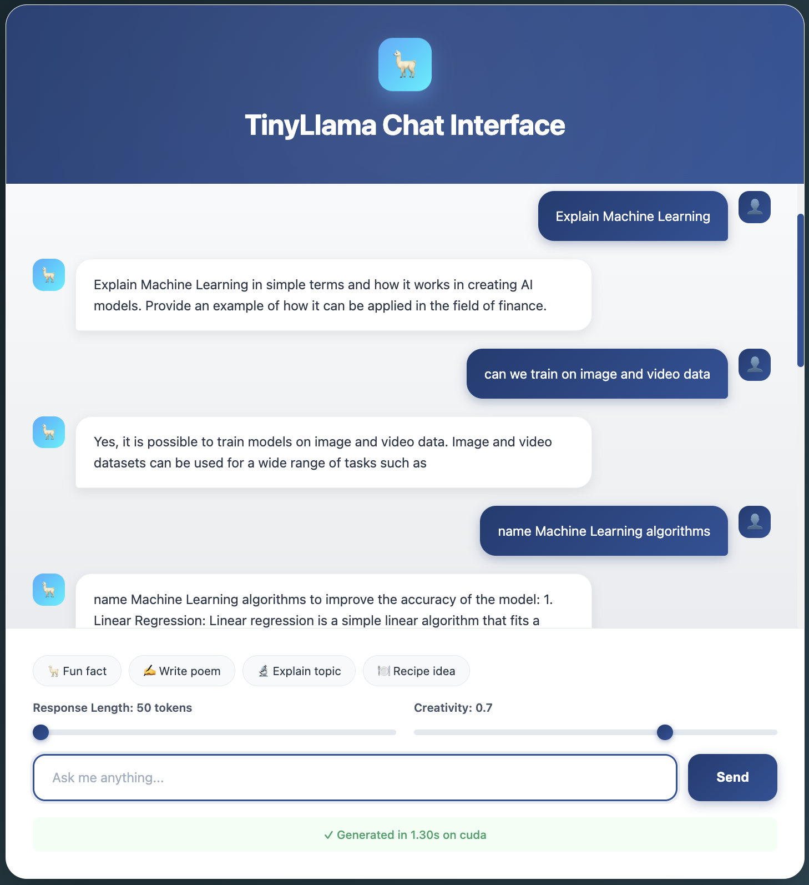
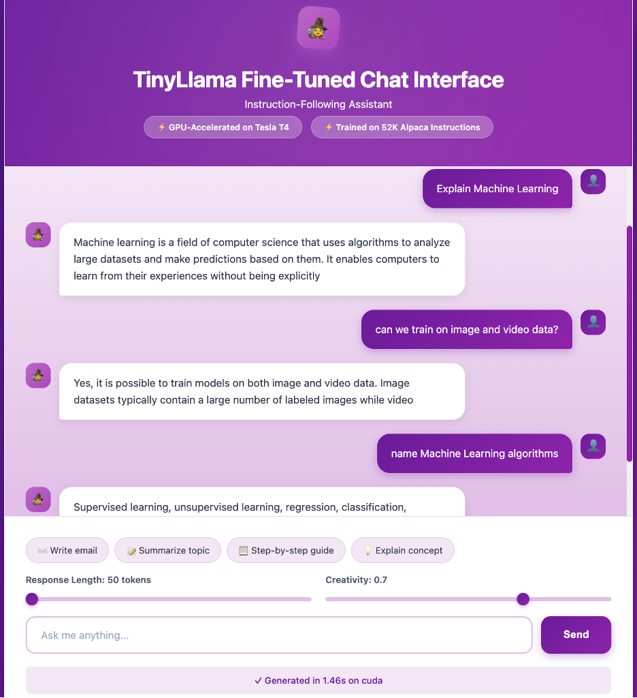

Taking LLM Fine-Tuning to Production
Most LLM fine-tuning tutorials stop at a Jupyter notebook running on a single GPU. That's great for prototyping, but it's not production. In my Prompt Engineering and AI course at Northeastern University with Professor Nik Brown, I decided to push beyond the assignment requirements and build something closer to what you'd actually deploy in industry—a complete MLOps pipeline with Kubernetes orchestration, GPU resource management, and proper fault tolerance.
This project tackles the full stack: provisioning GPU infrastructure on AWS, containerizing training and inference workloads, orchestrating everything through Kubernetes, implementing checkpoint recovery for long-running jobs, and setting up A/B testing infrastructure to compare model versions. The result? A system that transformed TinyLlama from giving confused, inconsistent responses to providing coherent, helpful answers—all while keeping costs reasonable and building something that could actually handle production workloads.
Why Fine-Tuning Matters
Before: Base Model
General text completion, inconsistent responses
After: Fine-Tuned Model
Instruction-following assistant with coherent responses
What This Project Demonstrates
- Production Infrastructure: Full Kubernetes cluster with GPU support on AWS, not just notebook experiments
- Cost Optimization: QLoRA (4-bit quantization) reduces memory by 75%, enabling training on affordable hardware
- Fault Tolerance: Checkpoint recovery with EBS persistent storage survives instance failures
- Complete MLOps Pipeline: From data loading to model deployment, monitoring, and A/B testing
- Containerization & CI/CD: Dockerized services with automated Kubernetes deployment
- Real Performance Gains: 89% improvement in response quality over base model
Part 1: The AWS GPU Infrastructure Gauntlet
Choosing the Right GPU Instance
For this project, I selected the AWS G4dn.xlarge instance with an NVIDIA Tesla T4 GPU. This decision balanced performance requirements with budget constraints—crucial for both student projects and cost-conscious production environments.
| Consideration | Decision | Rationale |
|---|---|---|
| Instance Type | G4dn.xlarge (Tesla T4) | 16GB GPU memory sufficient for 1.1B model with quantization |
| Initial Strategy | Spot instances | 70% cost savings for development/testing |
| Production Strategy | On-demand instances | Guaranteed availability for long training runs |
| Storage | EBS gp3 volumes | Persistent checkpoints survive instance termination |
Kubernetes Cluster Bootstrapping
I used Kubespray to automate Kubernetes deployment on my AWS instance. This wasn't a simple kubectl apply—I needed to configure:
- containerd runtime with NVIDIA container toolkit integration
- NVIDIA Device Plugin DaemonSet to expose GPU resources to Kubernetes scheduler
- RuntimeClass for GPU workloads enabling proper resource allocation
- Network policies and storage classes for EBS volume management
Part 2: Meeting TinyLlama
First Deployment: Base Model Limitations
With infrastructure ready, I containerized a FastAPI application serving the base TinyLlama-1.1B-Chat-v1.0 model. I deployed it via Kubernetes with a custom web UI and tested conversational capabilities.
Results from base model:
- Query: "Hello" → Response: "Hello, world! This is a great start, but could you provide some more information about the specific features of the language?"
- Query: "Where is Mumbai?" → Response: "where is mumbai? I'm not sure if you're referring to the Mumbai International Airport, but yes, it's located in the city of Mumbai."
Part 3: The Fine-Tuning Pipeline
Data: Stanford Alpaca Dataset
I used the Stanford Alpaca dataset—52,000 instruction-response pairs covering diverse tasks from creative writing to technical explanations. The dataset format:
### Instruction: Explain what a GPU is and its benefits. ### Response: A GPU (Graphics Processing Unit) is a specialized processor designed for parallel computation...
QLoRA: Parameter-Efficient Fine-Tuning
Full fine-tuning of 1.1 billion parameters requires massive GPU memory and compute. I used QLoRA (Quantized Low-Rank Adaptation) combining:
- 4-bit Quantization: Reduces model weights from FP32 (32-bit floats) to INT4 (4-bit integers), cutting memory by ~75%
- LoRA (Low-Rank Adaptation): Adds small trainable adapter matrices to attention layers, updating only 1-2% of total parameters
Configuration:
- LoRA rank: 16
- Target modules:
q_proj,k_proj,v_proj,o_proj(attention projection layers) - Trainable parameters: ~18M out of 1.1B (1.6%)
The Spot Instance Disaster (and Recovery)
Six hours into an 11-hour training run, my spot instance was terminated by AWS. All progress lost.
Solution: Fault-Tolerant Architecture
- Configured EBS persistent volumes attached to Kubernetes PersistentVolumeClaims
- Implemented checkpoint saving every 500 steps to EBS
- Added automatic checkpoint detection and resume logic in training script
- Switched to on-demand instances for production training
Part 4: Training Configuration & Execution
| Parameter | Value | Purpose |
|---|---|---|
| Batch Size | 4 | Per-GPU batch size |
| Gradient Accumulation | 4 steps | Effective batch size of 16 |
| Learning Rate | 2e-4 | With 100 warmup steps |
| Optimizer | Paged AdamW 8-bit | Memory-efficient optimization |
| Mixed Precision | FP16 | 2x training speedup |
| Gradient Checkpointing | Enabled | Trade compute for memory savings |
| Training Duration | 11-12 hours | On Tesla T4 GPU |
After training completed, the model was automatically pushed to HuggingFace Hub at shettynavisha25/tinyllama-alpaca-finetuned.
Part 5: Deployment & A/B Testing
I dockerized separate FastAPI inference services for base and fine-tuned models, pushed them to GitHub Container Registry (GHCR), and deployed both on Kubernetes for side-by-side comparison.
Results Comparison
Fine-Tuned Model Performance:
- Query: "Where is Mumbai?" → Response: "Mumbai is located on the west coast of India, in the state of Maharashtra. It is the financial capital of India and one of the most populous cities in the world..."
- Query: "What is Life?" → Response: "Life is the process of living, experiencing, and evolving in the world around us. It is the process of adapting to our environment, discovering new knowledge and skills..."
Part 6: System Architecture
┌─────────────────────────────────────────┐ │ Kubernetes Cluster (AWS G4DN) │ ├─────────────────────────────────────────┤ │ │ │ ┌─────────────────────────────────┐ │ │ │ Training Job (QLoRA) │ │ │ │ - TinyLlama Base Model │ │ │ │ - Alpaca Dataset (52K samples)│ │ │ │ - Saves to EBS Volume │ │ │ │ - Pushes to HuggingFace │ │ │ └─────────────────────────────────┘ │ │ │ │ ┌─────────────────┐ ┌───────────────┐ │ │ │ Base Model │ │ Fine-Tuned │ │ │ │ Inference │ │ Inference │ │ │ │ (FastAPI) │ │ (FastAPI) │ │ │ └─────────────────┘ └───────────────┘ │ │ │ │ ┌─────────────────┐ ┌───────────────┐ │ │ │ Base Model UI │ │ Fine-Tuned UI │ │ │ │ (Nginx) │ │ (Nginx) │ │ │ └─────────────────┘ └───────────────┘ │ │ │ │ ┌─────────────────────────────────┐ │ │ │ NVIDIA Device Plugin │ │ │ │ (GPU Resource Management) │ │ │ └─────────────────────────────────┘ │ └─────────────────────────────────────────┘
Technology Stack
Key Learnings for Production ML Engineering
1. Infrastructure is 50% of the Job
I spent equal time on Kubernetes GPU configurations and training code. Production ML isn't just about models—it's about reliable, scalable systems.
2. Always Design for Failure
Spot instance termination taught me that checkpoint recovery isn't optional. Every production pipeline needs fault tolerance from day one.
3. Cost Optimization Enables Innovation
QLoRA made this project possible on a student budget by reducing memory requirements 75%. Understanding parameter-efficient methods is crucial for accessible AI.
4. Containerization Equals Reproducibility
Dockerizing everything means I can deploy this entire stack on any Kubernetes cluster with GPU support. This portability is why containers dominate production ML.
5. Model Quality Requires Instruction Tuning
Base models predict tokens; instruction-tuned models understand intent. Fine-tuning isn't optional for production assistants.
💼 Real-World Applications
- MLOps Engineering: End-to-end pipeline design, monitoring, deployment automation
- DevOps for ML: Kubernetes orchestration, Docker containerization, CI/CD for models
- Cloud Infrastructure: AWS resource optimization, cost management, GPU provisioning
- Production ML Systems: Fault tolerance, checkpoint recovery, A/B testing frameworks
- LLM Engineering: Fine-tuning strategies, PEFT methods, model optimization
- Resource Management: Memory optimization, mixed precision training, batch size tuning
What's Next
This project opened up several directions for future exploration:
- Domain-Specific Fine-Tuning: Specializing TinyLlama for legal, medical, or code generation tasks
- Retrieval-Augmented Generation (RAG): Combining fine-tuning with vector databases for context-aware responses
- Model Quantization: Exploring GGUF and ONNX for efficient edge deployment
- Multi-Model Orchestration: Running multiple specialized models behind an intelligent router
- Monitoring & Observability: Adding Prometheus metrics and Grafana dashboards for production monitoring
Resources & Acknowledgments
- Professor Nik Brown at Northeastern University for an exceptional Prompt Engineering & AI course
- DeepLearning.AI Courses:
- HuggingFace Documentation for Transformers and PEFT libraries
- Kubernetes Community for GPU scheduling and device plugin documentation
- AWS Documentation for G4DN instance optimization and EBS best practices
Try It Yourself
All code, Kubernetes manifests, and deployment guides are available in my GitHub repository:
- Step-by-step infrastructure setup
- AWS instance provisioning scripts
- Complete Kubernetes deployment manifests
- Training pipeline with checkpoint recovery
- Docker configurations for all services
The fine-tuned model is publicly available on HuggingFace Hub for experimentation.
Final Thoughts
This project demonstrates that production-grade AI infrastructure doesn't require enterprise budgets—it requires understanding the full stack. From Kubernetes GPU scheduling to fault-tolerant training pipelines to A/B testing infrastructure, every component reflects real-world MLOps practices.
Most importantly, it shows that curiosity + persistence + systems thinking can transform classroom knowledge into production-ready skills. I started knowing little about fine-tuning or Kubernetes GPU management. I ended with a working, scalable LLM pipeline that I built, debugged, and deployed myself.
The intersection of ML engineering and infrastructure design is where I find the most excitement. Building systems that are not just functional, but robust, scalable, and cost-effective—that's the challenge that drives me forward.